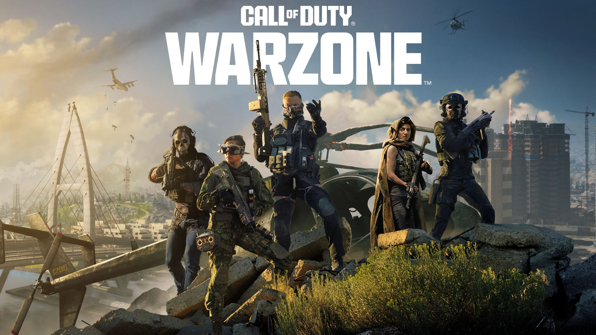
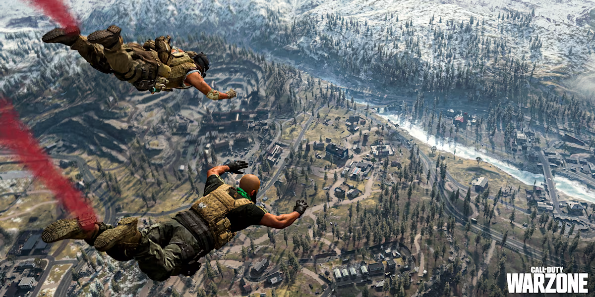
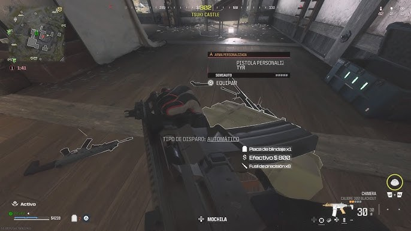
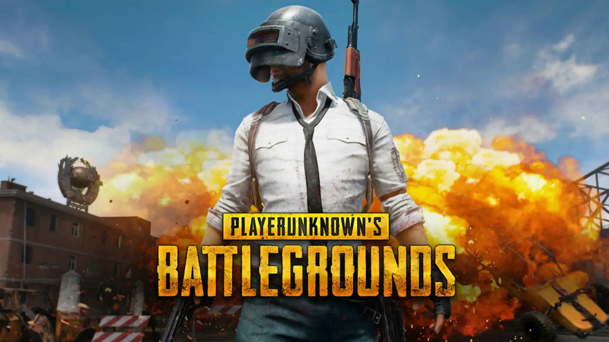
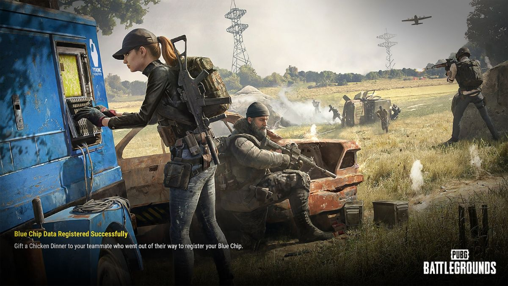
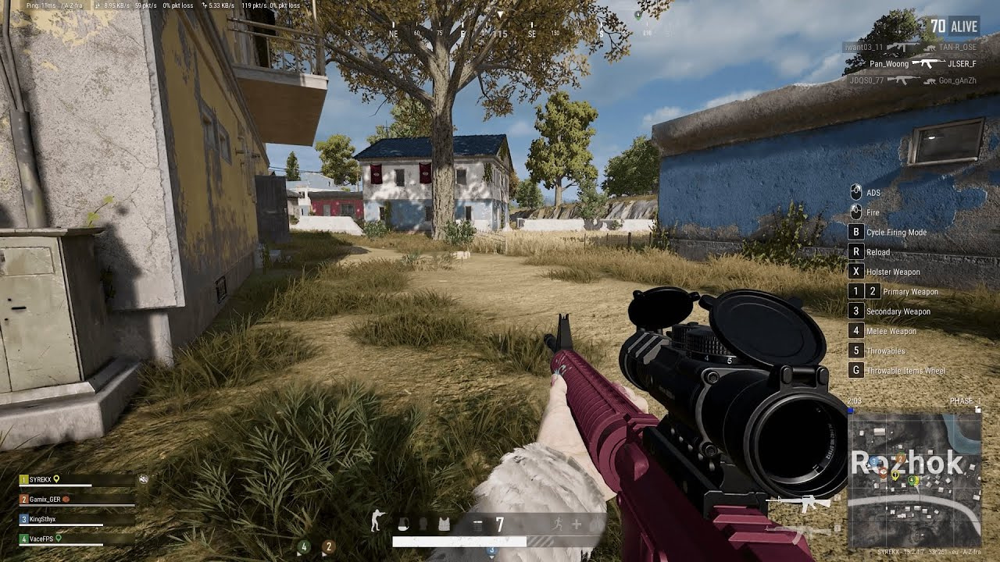
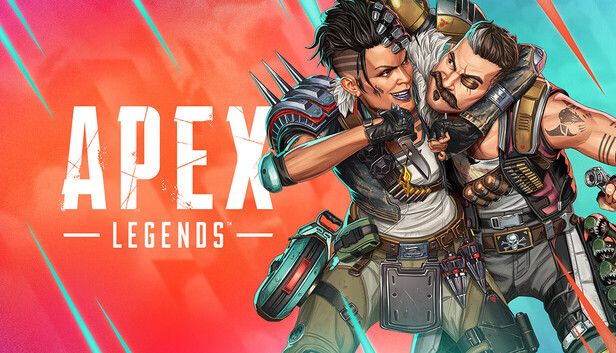
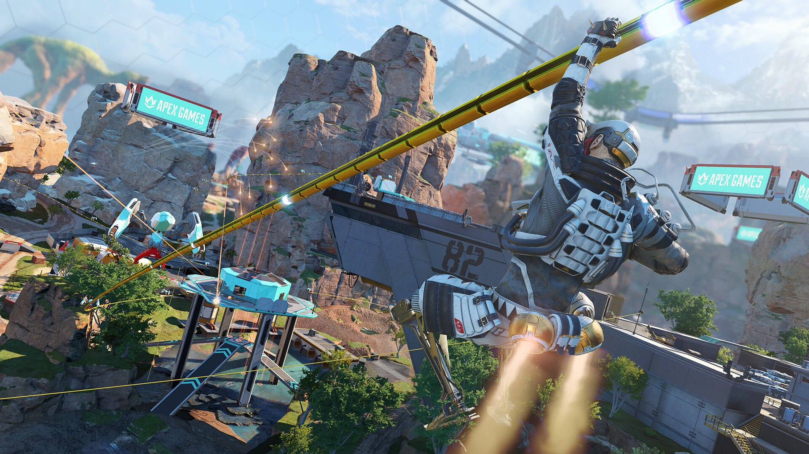
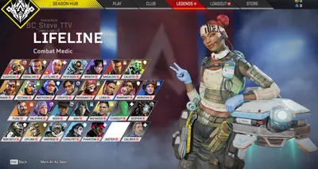
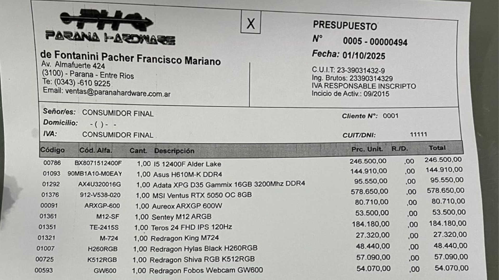

MINIMO:
nota: para trasmitir a 1080 se recomienda mejorar la grafica, a 720 es optimo
Universidad: Universidad Autónoma de Entre Ríos
facultad: Facultad de Ciencia y Tecnología
carrera: Licenciatura en Sistemas de Información
Cátedra: Fundamentos de Computación
Trabajo Práctico: Streaming de videojuegos
Profesores: Ismael Cassi y Paolo Orundés Cardinali
Integrantes: Mateo Raviol, Matias Ferreira, Exequiel agustin David, Juan Ignacion Passarino
Call of duty warzone



acontinuacion se mostraran los componentes minimos y recomendados para stremear a 1080p a 60 fps call of duty warzone
MINIMO:
nota: para trasmitir a 1080 se recomienda mejorar la grafica, a 720 es optimo
RECOMENDADO:
Software para el stream:
PUGB BATTLEGROUNDS



acontinuacion se mostraran los componentes minimos y recomendados para stremear a 1080p a 60 fps
MINIMO:
nota: para trasmitir a 1080 se recomienda mejorar la grafica, a 720 es optimo
RECOMENDADO:
Software para el stream:
APEX LEGENDS



acontinuacion se mostraran los componentes minimos y recomendados para stremear a 1080p a 60 fps
MINIMO:
nota: para trasmitir a 1080 se recomienda mejorar la grafica, a 720 es optimo
RECOMENDADO:
Software para el stream:
Presupuestos

Paraná hardware
total 1155 dolares